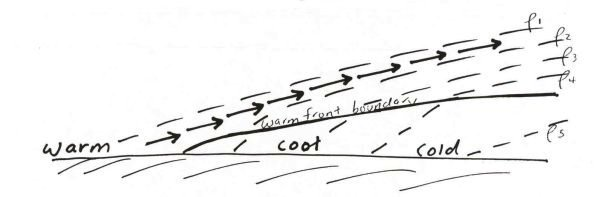
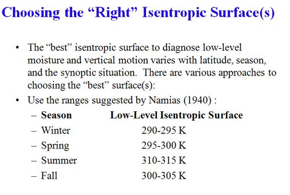

theweatherprediction.com The density varies between cold air and warm air with cold air being relatively more dense. Due to the higher density, cold dense air sinks to the surface and has a high resistance to being lifted in the vertical. In a differential advection situation, relatively warm air will lift over shallow surface cold air because the warm air is less dense. The idea of isentropic lifting is air "prefers" to move toward a region with the same density (potential temperature surfaces (a.k.a. along a constant theta surface)). Warm air resists undercutting cold air. To stay at the same density (by preserving potential temperature) it must override the cold air. The depth of cool air on the cool side of a warm front generally increases moving to the north of the surface warm front boundary. As warm air advects over colder air, it advects to a higher altitude above sea level as it moves north of the warm front boundary. The warm, less dense air rises gradually in the vertical as it overrides the sloping cold dense air (less potential temperature air). It must do this to stay at the same potential temperature (same relative density). This is why warm fronts tend to bring widespread light to moderate precipitation. See diagram below:  The uplift is at a lower angle than uplift that is generally associated with cold fronts and thermodynamic thunderstorms. You will often come across this complicated concept when reading NWS forecast discussions. Terms that they will mention that relate to this concept include (theta surface, potential temperature surface, isentropic upglide, differential advection, and density perturbation). For another explanation of this process of isentropic lifting (and diagrams) see Chuck Doswell's article at: http://www.cimms.ou.edu/~doswell/overrun/overrunning.html |
ISENTROPIC ANALYSIS
|
 |